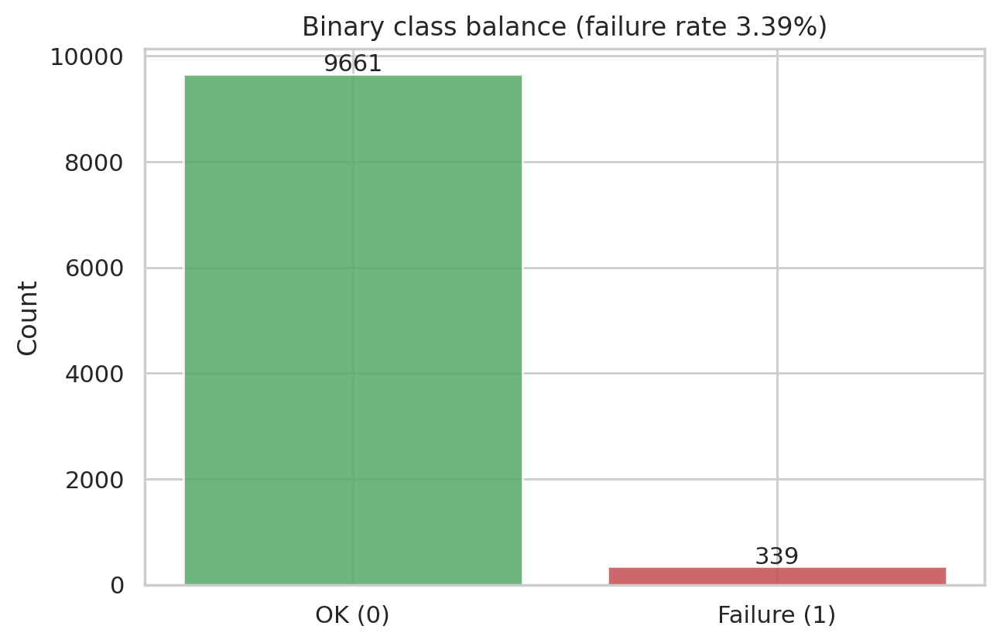
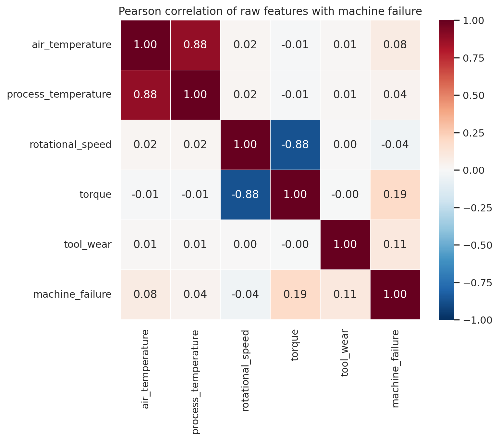
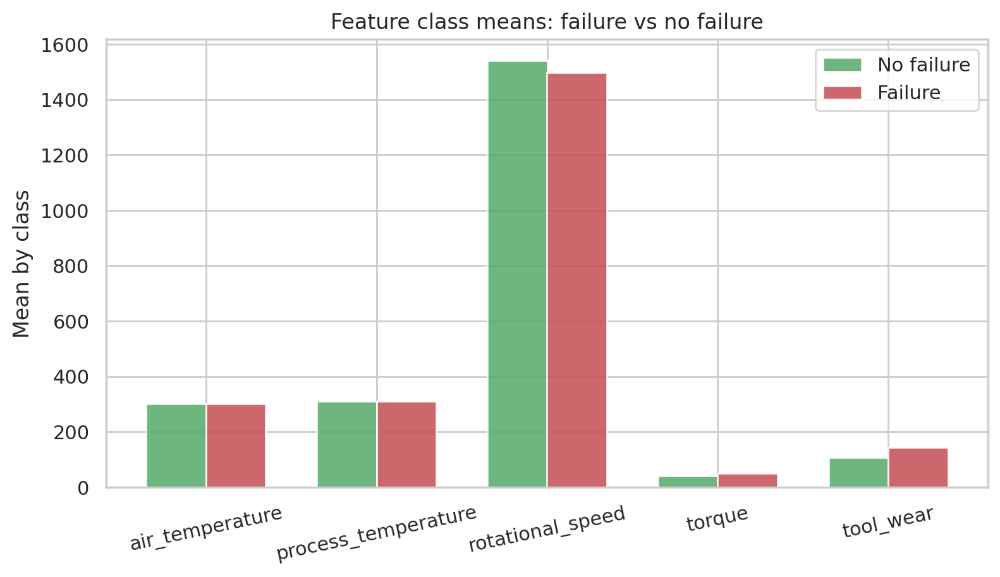
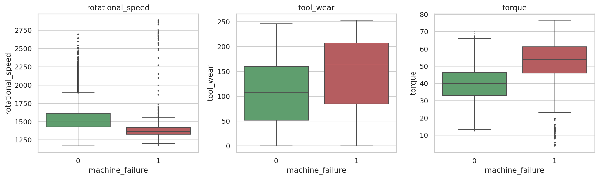
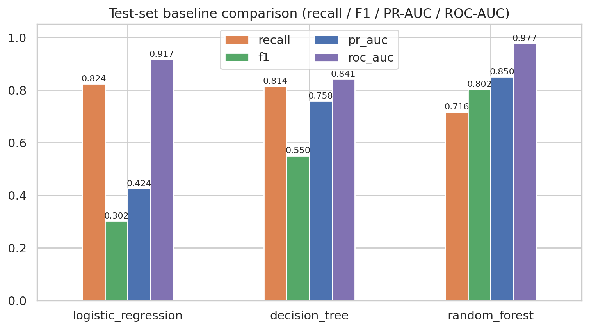
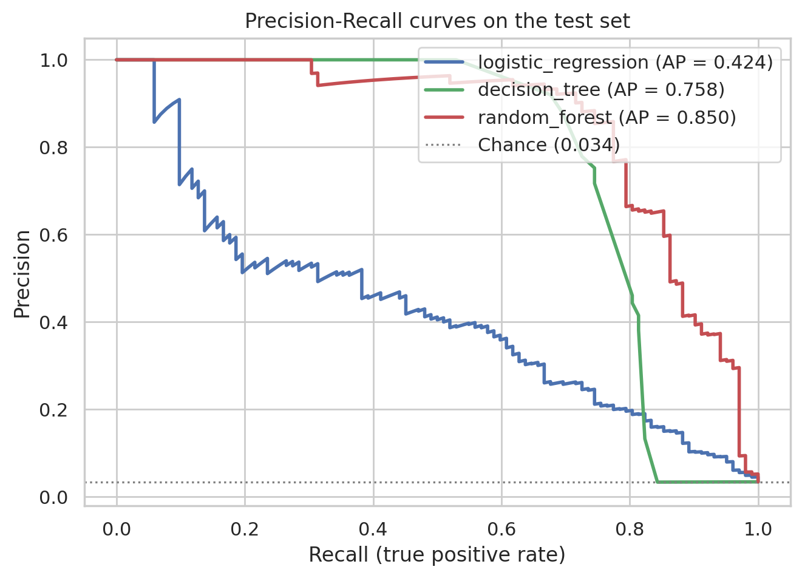
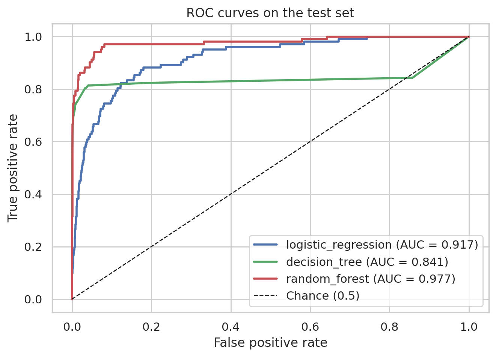
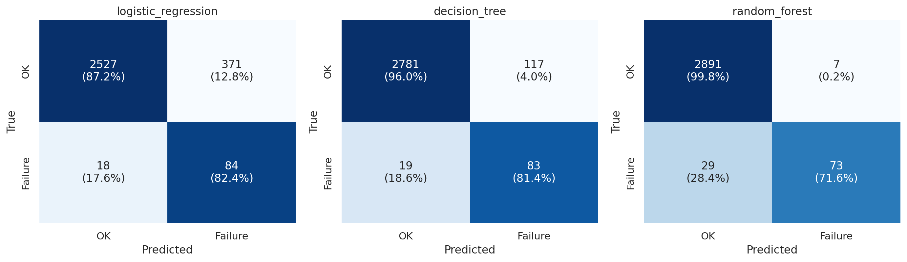
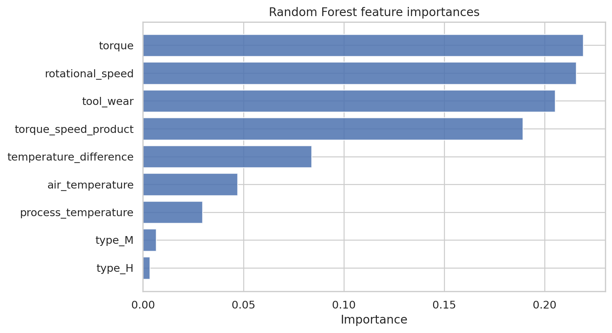

探索分析、特徵工程與資料外洩防護、以及三種基準模型的比較評估
2026-10-23
本研究以 UCI AI4I 2020 Predictive Maintenance 資料集為例，建立一套從資料取得與清洗、探索分析、特徵工程、到二元分類基準模型比較的完整流程，目標是預測工具機是否發生失效（machine_failure）。資料集共 10,000 筆、16 個欄位，包含 5 個製程感測特徵與 5 個失效模式旗標；前處理時移除 UTF-8 BOM、將原始帶單位與空格的欄位名標準化為 snake_case，並記錄 27 筆失效旗標與主標籤不一致的樣本。探索結果顯示失效比例僅 3.39%（339/10,000），屬嚴重類別不平衡：各失效模式出現次數為 hdf 115、osf 98、pwf 95、twf 46、rnf 19；失效組的工具磨損平均高出 37.09 分鐘、扭矩高出 10.54 Nm、轉速低 43.77 rpm，是區辨力最高的三個特徵。
模型採用三種基準分類器：Logistic Regression、Decision Tree 與 Random Forest，全部以 Pipeline 封裝、以訓練集配適標準化與 one-hot 編碼以防止資料外洩，並以 class_weight 處理不平衡；資料以分層抽樣切分為訓練集 7,000 筆、測試集 3,000 筆（70/30，seed = 42）。考慮類別不平衡，評估以 recall、F1、PR-AUC 與 ROC-AUC 為主 —— 隨機森林在 F1（0.7821）、PR-AUC（0.8498）與 ROC-AUC（0.9786）皆為三模型中最佳，但 recall 僅 0.6863，於測試集漏檢 32 台失效機器；Logistic Regression 與 Decision Tree 的 recall 分別為 0.8235 與 0.8333，但精確度低（分別為 0.1846 與 0.4208），誤報數顯著增加。特徵重要度分析一致指出扭矩（torque）、轉速（rotational_speed）與工具磨損（tool_wear）是預測失效的核心訊號。此結果顯示：在維護情境下，模型選擇必須在「召回失效」與「減少誤報」之間做明確權衡，閾值調校與成本敏感決策是後續最直接的方向。
關鍵詞： 預測性維護、AI4I 2020、類別不平衡、ROC-AUC、PR-AUC、隨機森林
預測性維護（Predictive Maintenance, PdM）是工業 4.0 的核心應用之一：以機台的感測資料預測即將發生的失效，在故障造成停機與安全風險之前排定維護。UCI Machine Learning Repository 的 AI4I 2020 Predictive Maintenance 資料集（Matzka, 2020）以合成資料模擬工具機加工過程中五種失效模式的生成機制，包含空氣／製程溫度、轉速、扭矩與刀具磨損等即時感測值，並標註 machine_failure 主標籤與 twf、hdf、pwf、osf、rnf 五個失效模式旗標，是驗證「感測資料 → 失效預測」端到端流程的良好基準。
與一般的分類任務相比，本資料集有兩個關鍵挑戰：其一是失效樣本極少（3.39%），單純追求準確率會得出「全部預測為正常」的無用模型；其二是在真實維護情境中，漏掉一台即將故障的機台（偽陰性）的代價通常遠高於多派一次技術員（偽陽性），因此模型評估必須以 recall 與 PR-AUC 為主。
本研究旨在完成以下工作：
原始資料取自 UCI Machine Learning Repository 的 AI4I 2020 資料集（壓縮包內含一個 CSV），由 scripts/prepare_ai4i.py 下載並整理後保存為 data/ai4i2020.csv。資料共 10,000 筆、16 個欄位，經標準化後欄位如下：
表 1：AI4I 2020 資料集欄位（標準化後）
| 欄位 | 類型 | 單位 | 說明 |
|---|---|---|---|
udi |
數值 | — | 識別碼，1–10,000 |
product_id |
文字 | — | 產品 ID，格式為品質代碼 L/M/H + 5 位數字 |
type |
類別 | — | 產品品質變異：L（6,000 筆）、M（2,997 筆）、H（1,003 筆） |
air_temperature |
數值 | K | 環境溫度 |
process_temperature |
數值 | K | 製程溫度，恆高於環境溫度 1 K 以上 |
rotational_speed |
數值 | rpm | 主軸轉速 |
torque |
數值 | Nm | 主軸扭矩 |
tool_wear |
數值 | min | 刀具已使用時間（分鐘） |
machine_failure |
0/1 | — | 目標變數：機台是否失效 |
twf / hdf / pwf / osf / rnf |
0/1 | — | 五個失效模式旗標：刀具磨損、散熱失效、電源失效、過應力、隨機失效 |
UCI 原始 CSV 以 UTF-8 with BOM 儲存，且欄位名稱為「UDI」「Air temperature [K]」等帶有空格與單位括號的命名。前處理腳本以 encoding="utf-8-sig" 讀入以剝除 BOM，並對欄位型別進行驗證（machine_failure 與旗標須為 0/1、type 須為 L/M/H、product_id 須符合 [LMH]\d{5} 格式），再重新輸出統一 snake_case 命名的 data/ai4i2020.csv。
品質檢查結果如下：
rnf（隨機失效）旗標為 1 但 machine_failure 為 0（這是該資料集已知的資料生成特性），另 9 筆為 machine_failure 為 1 但五個失效旗標皆為 0。這 27 筆的索引已另存於 data/ai4i2020_flag_inconsistency.csv；本研究保留這些樣本並以其原始 machine_failure 作為建模目標，僅在解讀旗標計數時留意此不一致。表 2：目標變數與失效模式分布
| 類別／模式 | 筆數 | 佔比 |
|---|---|---|
正常（machine_failure = 0） |
9,661 | 96.61% |
失效（machine_failure = 1） |
339 | 3.39% |
| hdf（散熱失效） | 115 | 1.15% |
| osf（過應力失效） | 98 | 0.98% |
| pwf（電源失效） | 95 | 0.95% |
| twf（刀具磨損失效） | 46 | 0.46% |
| rnf（隨機失效） | 19 | 0.19% |
失效比例僅 3.39%，且各失效模式彼此部分重疊（部分失效樣本同時觸發多個旗標），屬於多元因、極端不平衡的二元分類問題。因此本研究不以 Accuracy 為主指標，改以 recall、F1、PR-AUC 與 ROC-AUC 為評估核心。

五個製程感測特徵與 machine_failure 的 Pearson 相關係數如表 3：扭矩（0.1913）與工具磨損（0.1054）呈正相關、轉速呈負相關（−0.0442），溫度類特徵的線性相關較弱。但線性相關係數未必反映非線性的交互作用（例如高扭矩 × 低轉速的組合），故後續仍以樹模型捕捉這些非線性訊號。
表 3：特徵與 machine_failure 的 Pearson 相關係數
| 特徵 | 相關係數 |
|---|---|
torque |
0.1913 |
tool_wear |
0.1054 |
air_temperature |
0.0826 |
process_temperature |
0.0359 |
rotational_speed |
−0.0442 |

表 4 列出正常組與失效組的特徵平均。失效組的工具磨損平均為 143.78 分鐘（正常組 106.69），扭矩平均 50.17 Nm（正常組 39.63），轉速平均 1,496.49 rpm（正常組 1,540.26）。以類別平均差衡量，區辨力依序為：rotational_speed（−43.77）＞ tool_wear（+37.09）＞ torque（+10.54）＞ air_temperature（+0.91）＞ process_temperature（+0.29）。
表 4：正常組與失效組的特徵平均
| 機台狀態 | 環境溫度 (K) | 製程溫度 (K) | 轉速 (rpm) | 扭矩 (Nm) | 工具磨損 (min) |
|---|---|---|---|---|---|
| 正常（0） | 299.97 | 310.00 | 1,540.26 | 39.63 | 106.69 |
| 失效（1） | 300.89 | 310.29 | 1,496.49 | 50.17 | 143.78 |


圖 4 的箱形圖顯示失效組的轉速分布整體偏低、扭矩與工具磨損整體偏高，且失效組工具磨損的下限明顯抬升——這與資料集的生成機制一致（例如刀具磨損失效發生於刀具使用 200 分鐘門檻、過應力失效與扭矩 × 轉速乘積門檻相關），說明派生特徵具有物理基礎。
完整探索摘要另存於 results/ai4i_eda_summary.md。
torque_speed_product = 扭矩 × 轉速（Nm × rpm），對應資料集中「功率失效」的生成機制（扭矩 × 轉速超過門檻）。temperature_difference = 製程溫度 − 環境溫度（K），對應「散熱失效」的生成機制（兩溫差低於門檻）。type 採 one-hot 編碼並丟棄第一層（drop first），避免共線。StandardScaler 標準化，供 Logistic Regression 使用；樹模型對單調變換不敏感，共用同一 Pipeline 亦無妨。下列欄位刻意排除於模型輸入之外：
udi 與 product_id：純識別碼，會造成假性的擬合與記憶，twf、hdf、pwf、osf、rnf）：失效模式的「定義列」，若作為特徵即等同於使用答案本身，是嚴重的資料外洩（data leakage）。machine_failure：為預測目標。最終建模特徵共 8 個：5 個原始數值特徵（含標準化）、2 個派生特徵與 1 個類別特徵。標準化與 one-hot 編碼由 Pipeline 中的 ColumnTransformer 在訓練集上配適（fit on train only），預測時才套用到測試集，進一步避免測試集資訊滲入前處理。
以 train_test_split(test_size=0.30, stratify=y, random_state=42) 進行分層切分：訓練集 7,000 筆（失效 237 筆、比例 3.386%）、測試集 3,000 筆（失效 102 筆、比例 3.400%），兩組正例比例一致，保證評估的代表性。
表 5：模型設定與不平衡處理
| 模型 | 關鍵超參數 | class_weight |
|---|---|---|
| Logistic Regression | max_iter=2000 |
balanced（反比於類別頻率） |
| Decision Tree | max_depth=6 |
balanced |
| Random Forest | n_estimators=400、max_depth=10 |
balanced_subsample（每棵樹自行重加權） |
三個模型皆以 Pipeline 封裝（前處理 → 模型），統一使用隨機種子 42。class_weight 的目的在於補償 3.39% 的極端不平衡，讓失效類別在損失函數中獲得較大的權重，避免模型收斂至「全部預測為正常」的平凡解。
考量類別不平衡後採用以下指標：
三模型統一以 >= 0.5 的預設閾值輸出預測，故結果反映的是「未調校閾值」下的原始能力，這在 3.39% 不平衡下會系統性壓低 recall，是解讀結果的重要前提。
測試集（3,000 筆，含 102 台失效機台）上的結果如表 6，數據亦存於 results/ai4i_model_comparison.csv（完整指標含 precision 及類別 0 的細項則在 results/ai4i_full_metrics.csv 與 results/ai4i_metrics.json）。
表 6：三基準模型的測試集比較
| 模型 | recall | f1 | pr_auc | roc_auc |
|---|---|---|---|---|
| Logistic Regression | 0.8235 | 0.3016 | 0.4242 | 0.9171 |
| Decision Tree | 0.8333 | 0.5592 | 0.7454 | 0.8584 |
| Random Forest | 0.6863 | 0.7821 | 0.8498 | 0.9786 |



Random Forest 在 F1（0.7821）、PR-AUC（0.8498）與 ROC-AUC（0.9786）三項皆為最佳，是三模型中排序品質與綜合表現最好者。但在固定 0.5 閾值下，它的 recall 僅 0.6863，是三者中最低；Logistic Regression recall 最高（0.8235）但 precision 僅 0.1846（f1 0.3016），Decision Tree 則在 recall（0.8333）與 F1（0.5592）之間取得折衷。Precision-Recall 曲線（圖 6）清楚地呈現這種張力：Random Forest 在低 recall 區間維持高 precision，而 Logistic Regression 靠提升 recall 但付出大量誤報。
表 7：測試集混淆矩陣（測試集 3,000 筆：失效 102 筆、正常 2,898 筆）
| 模型 | TP | FN | FP | TN | recall | precision |
|---|---|---|---|---|---|---|
| Logistic Regression | 84 | 18 | 371 | 2,527 | 0.8235 | 0.1846 |
| Decision Tree | 85 | 17 | 117 | 2,781 | 0.8333 | 0.4208 |
| Random Forest | 70 | 32 | 7 | 2,891 | 0.6863 | 0.9091 |

三個模型都足以說明在同一閾值與同一資料切分下，「模型選擇」直接變成一個經營決策：
Random Forest 的不純度基礎特徵重要度如表 8（存於 results/ai4i_metrics.json）；置換重要度（permutation importance，10 次重複，於測試集）如表 9（存於 results/ai4i_permutation_importance.csv）。
表 8：Random Forest 特徵重要度（Gini importance）
| 特徵 | 重要度 |
|---|---|
torque |
0.2212 |
rotational_speed |
0.2204 |
tool_wear |
0.2031 |
torque_speed_product |
0.1820 |
temperature_difference |
0.0860 |
air_temperature |
0.0475 |
process_temperature |
0.0289 |
type_L |
0.0063 |
type_M |
0.0045 |
表 9：置換重要度（Random Forest，測試集，10 次重複）
| 特徵 | 重要度平均 | 標準差 |
|---|---|---|
rotational_speed |
0.01557 | 0.00137 |
torque |
0.01197 | 0.00087 |
temperature_difference |
0.01123 | 0.00123 |
torque_speed_product |
0.00963 | 0.00043 |
tool_wear |
0.00917 | 0.00147 |
air_temperature |
0.00590 | 0.00056 |
type |
0.00157 | 0.00107 |
process_temperature |
−0.00057 | 0.00065 |

兩種重要度雖排序略有出入（Gini 重要度偏向單體特徵、置換重要度偏向樹集合中真正的增量訊號），但結論一致：扭矩、轉速、工具磨損是預測失效的三個核心訊號，兩個派生特徵（torque_speed_product、temperature_difference）也穩定貢獻資訊，而產品品質等級 type 幾乎沒有貢獻。置換重要度顯示 process_temperature 的納入甚至輕微傷害模型（−0.00057），與其近為零的相關一致。
以 F1、PR-AUC、ROC-AUC 衡量，Random Forest 是三組基準中綜合最優（0.7821 / 0.8498 / 0.9786），其 ROC-AUC 高達 0.9786 表示失效與正常樣本的機率排序幾乎完美分離。但在預設 0.5 閾值下，它只召回 68.63%（70/102）的失效機台，漏檢 32 台。這揭示了兩件事：第一，Random Forest 的效能主要來自排序品質，閾值未同步處理時，其能力未完全轉化為維護可用的高 recall；第二，F1 最佳不等於經營上最佳——漏掉的 32 台失效機台才是維護情境的主要風險。
在預測性維護中，偽陰性（漏檢即將失效的機台）與偽陽性（誤報正常機台）的成本通常嚴重不對稱：漏檢可能導致非計畫停機、設備損壞甚至安全事件；偽陽性只是多派一次技術員或多留一次備件。本研究的混淆矩陣具體量化了這個權衡：
| 策略 | recall | 營運代價 |
|---|---|---|
| Logistic Regression（recall 優先） | 0.8235 | 每次定期巡檢需檢查 455 台預警機台，其中僅 84 台真正失效（precision 0.1846） |
| Decision Tree | 0.8333 | 預警機台 202 台，precision 0.4208 |
| Random Forest | 0.6863 | 預警機台僅 77 台，precision 0.9091，但漏掉 32 台失效 |
若誤報成本遠低於漏檢成本（維護情境的典型假設），Logistic Regression 可能比「F1 最佳」的 Random Forest 更合用；反之，若維護資源（技術員時數、停機窗口）是瓶頸，Random Forest 的低誤報更具吸引力。這正是為何本任務的下一個必要步驟是閾值調校：在 ROC / PR 曲線上依營運可接受的漏檢率選擇操作點，而不是沿用預設閾值。
三條證據鏈——相關性（表 3）、類別平均差（表 4）、與雙重特徵重要度（表 8、9）——一致指向 torque、tool_wear、rotational_speed 為預測失效的三個核心特徵；兩個派生特徵也覆蓋了資料集中「功率失效」與「散熱失效」的生成機制。這種穩定性表示模型學到的不只是統計慣性，而是與失效生成機制（刀具磨損門檻、功率超限、溫差過小）相符的因果性訊號，有助於在正式部署前解讀模型的行為。
本研究完成了 AI4I 2020 資料集的取得與清洗（BOM 剝除、欄位標準化、27 筆旗標不一致記錄）、探索分析（3.39% 失效不平衡、hdf 115 / osf 98 / pwf 95 / twf 46 / rnf 19 的失效模式分布、轉速 −43.77 rpm / 工具磨損 +37.09 min / 扭矩 +10.54 Nm 的類別平均差）、特徵工程與嚴格的資料外洩防護，以及三種基準模型的分層 70/30 比較，主要結論如下：
type 幾乎無貢獻。class_weight 比較 SMOTE、ADASYN、RandomOverSampling 等重採樣技術。26-ai-new-power/
├── data/
│ ├── ai4i2020.zip # UCI 原始下載
│ ├── ai4i2020.csv # 清理後資料（BOM 剝除與欄位標準化）
│ └── ai4i2020_flag_inconsistency.csv # 27 筆旗標不一致樣本索引
├── scripts/
│ ├── prepare_ai4i.py # 下載、清洗與驗證資料
│ └── run_ai4i_analysis.py # EDA、特徵工程、模型訓練與評估
├── figures/ # 視覺化圖表（ai4i_*.png 共 9 張）
├── results/
│ ├── ai4i_eda_summary.md # 探索分析摘要
│ ├── ai4i_model_comparison.csv # 三模型 recall / f1 / pr_auc / roc_auc
│ ├── ai4i_full_metrics.csv # 完整指標（含 precision 與類別 0 細項）
│ ├── ai4i_metrics.json # 全部數值結果（含混淆矩陣與重要度）
│ └── ai4i_permutation_importance.csv # 置換重要度
└── report/
├── ai4i_baselines.md # 基準比較原始摘要
└── ai4i2020_prediction_paper.md # 本論文
重現步驟：
python3 scripts/prepare_ai4i.py
python3 scripts/run_ai4i_analysis.py
環境：Python 3.13、pandas、scikit-learn、matplotlib、seaborn、python-markdown。隨機種子固定為 42。論文的 HTML 版本（report/ai4i2020_prediction_paper.html）沿用 report/paper.css，由 scripts/md_to_html.py 轉換產生。